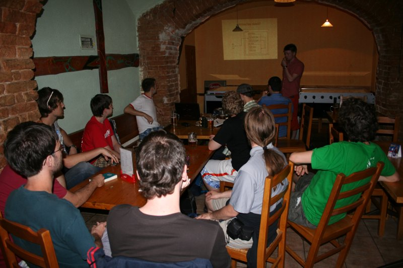

KINDNESSES & PROMISES
EuroPython 2023
Michal
I've really enjoyed a Ruby meetup!
Honza
Is there a Python meetup? :)

A Czech lesson
🇬🇧 Meet with friends
= 🇨🇿 Jít na pivo
= 🇬🇧 Go for a beer
i=y
Tips for meetups
- Start
- Just meet
- — Anything else is a bonus
- Seek help
- Own your records
- Keep it regular
Teaching Python
Maruška M.
Hello, we're looking for a tutor for Python.
Ideally from the very beginning. BRNO.
We're 3 girls, and we're getting lost.
Is anyone is interested?
Name the price, for us it's important to start
as soon as possible.
Share what you know
- Pick a target audience
- Invite 3-5 people
- Have an end result in mind
- Explain what they don't know
- Keep notes
- When done, pick another task
Sharing notes
- For recall
- For missing people
- For helpers
- For other courses
- For self-learners
Dramatis personae
- Attendee
- Organizer
- Mentor
- Presenter
- Author
- Maintainer
- Sponsor
I came for the language,
but stayed for the community
— Brett Cannon, 2014
Why open the source?

Community software?
I came for the language,
but stayed for the community
— Brett Cannon, 2014
Setting expectations for open source participation
— Brett Cannon, 2018
Setting expectations for community participation
Setting expectations
Everyone is a volunteer
Everything has a cost.
Everything you use is a gift.
Participation in the community should be a series of kindnesses.
Kindnesses
Using software
Providing feedback
Submitting a contribution
Contribution feedback
Maintenance
Giving a talk
Organizing a meetup
Teaching a course
Don't expect anyone to do more
than they already did
Promises
This talk
A conference
A meetup
PSF board
A review
A release
No promises
Me
I'll try to get to it this week, no promises!
No promises
Me
I'll try to get to it this week, no promises!
You
Please, it would help me!
Making promises
Check your calendar
Mark your calendar
Breaking promises
Apologize
Think
Move on
Call me out
Make fewer promises
I'd love to work on that, but…
I'll put it on my TODO list
If anyone beats me to it, go ahead!
I won't get to it myself, but I can guide you